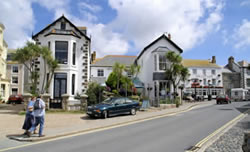
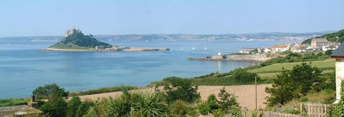

Marazion - Gateway to St. Michaels Mount
The stunning town of Marazion (Cornish: Marghasyow) set in the heart of mounts bay, is the gateway to the jewel of the bay, St. Michael's Mount. The town has a long history, and vies or the title of oldest Town in Britain, after being granted its charter in 1257 by King Henry III.
Marazion was once a flourishing town, owing its prosperity to the throng of pilgrims who came to visit St Michael's Mount. During the first half of the 16th century it was twice plundered; first by the French, and later by Cornish rebels. The rise and progress of the neighbouring borough of Penzance in the 17th century marginalised Marazion.
In more recent time, Marazion has acted as a centre for tourism in West Cornwall, and for good reason. Its sea front stretches for miles, with clean sandy beaches and stunning views towards the Lizard and Lands End. The Giants Causeway is revealed at low tide, allowing foot access to the fairytale-like island castle. The Mount is owned by the St. Aubyn Family and The National Trust. In 2007 - 2008 the castle underwent structural repairs to the outside castle walls. The island also boasts beautiful sub-tropical gardens, a small harbour, gift shops, a restaurant and tea rooms.
The town popular with family's wishing to take a classic british seaside holiday, due to the luxurious beaches, and shallow water provides a safe place for smaller children to play in the sea. 5 Minutes walk down the beach is Long Rock, a hot spot for wind surfers, kite surfers and sailing enthusiasts.
Marazion is within easy traveling distance of all major attractions in Western Cornwall, and is the ideal base for your Cornwall holiday. The town is a short distance along the beach from Penzance, and from here it is simple to travel to Land’s End, St Ives, Newquay, Helston, and the popular destinations of the Minack Theatre, the St. Ives Tate Gallery and the Eden Project.

The town itself has a wide selection of accommodation, ranging from guesthouses, camping sites, caravan campsites, bed & breakfast accommodation, and hotels. Marazion is filled view a lovely variety of restaurants, bars and pubs. Shoppers will be delighted with the variety of gift and craft shops, while art lovers will find hours of pleasure perusing the many art galleries showing prominent local artists. Relaxing on the beach is an enchanting pastime, being in full view of St Michael's Mount, and for the more energetic windsurfing and kite surfing are favourite activities for many visitors. Kite surfing and windsurfing lessons are available on the beach.
sections of text - marazion.net | Images - Pierre Terre, Mari Buckley